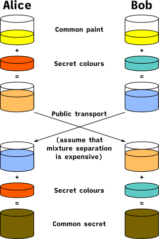
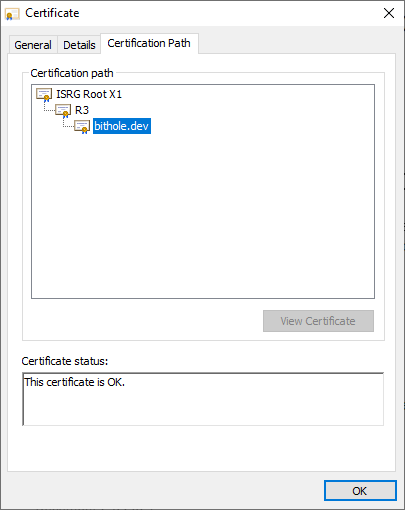

February 25, 2022
Transport Layer Security (5/6)
This post is part of a series.
The Internet is, by default, not secure. In TCP and below, everything is transferred in plaintext; an attacker could snoop on your communications or, worse, masquerade as the person you think you're talking to. Yet today, most users don't have to worry about those kinds of attacks. Why not? The answer is the Transport Layer Security protocol, which transparently secures much of the modern Web. Strap in, because we're about to learn some cryptography.
Conceptual Overview §
TLS aims to create a secure channel with three properties: confidentiality, authenticity, and integrity. These three properties go hand in hand, but each one has a distinct meaning.
Confidentiality §
It's pretty easy to see why confidentiality is important: nobody wants a third party to be able to read your communications. The solution is to encrypt your data with a cipher, an algorithm which accepts a plaintext and a key and produces a ciphertext, such that it is easy to retrieve the plaintext if you have the key, but virtually impossible without it. When a cipher uses the same key to encrypt and decrypt data, it is called a symmetric cipher.
Symmetric ciphers are great because they're usually very fast and very secure, but they do have one weakness: key exchange. The two communicating parties need to figure out a way to share a secret key without the possibility of anyone else obtaining it. This creates a bit of a chicken-and-egg problem; after all, they can't establish a private means of communication without negotiating a key first, which just brings us back to square one. To solve this problem, we need to get a little more clever.
Enter the Diffie-Hellman Key Exchange. It enables a client and a server to generate the same secret value while only exchanging publicly knowable data, which sounds impossible until you take a look at how it works. Here's a diagram that explains the steps of Diffie-Hellman key exchange using colors of paint as a stand-in for cryptographic keys.

We can make this model a little more rigorous by replacing the paints with variables. Suppose C is some common value that both Alice and Bob know. The paint-mixing can be modeled as an operation which we will call *, with the following properties:
- It is easy to compute
x * y, but even if the value ofxoryis known, it should be very difficult to retrieve the operands from the result of the operation. Examples of such operations will be discussed later. - The operation must be associative, i.e.
(x * y) * z=(x * z) * y.
(Don't let the notation confuse you. * does not represent regular multiplication, which wouldn't work for this process since it doesn't fulfill our first requirement.)
Now, we're ready to do the key exchange. Alice generates a random secret A, and Bob generates a random secret B. Alice sends Bob A * C and Bob sends Alice B * C. Now, Alice can compute A * (B * C) and Bob can compute B * (A * C). Because the operation is associative, Alice and Bob arrive at the same value, which they can now use as the key to a symmetric cipher.
However, if an attacker could observe the key exchange between Alice and Bob, they would only obtain A * C and B * C. The attacker probably knows C, but because reversing the operation is hard, the attacker cannot calculate A or B, and thus cannot determine the shared secret.
Authenticity §
Confidentiality is worthless if you can't ensure that the person on the other end of the line is who you actually intend to talk to. One of TLS's jobs is to help the server prove its identity. This is accomplished with the help of digital signatures.
Digital signatures are a form of public key cryptography, so the client first has to generate a keypair. This is usually done by creating a private key from random data, and then deriving a public key using a process specific to the signature scheme. The public key serves as the cryptographic identity of the client, and it can be distributed safely without compromising the private key.
To create a digital signature, the client uses the signing algorithm to convert their private key and a piece of data into a short output known as a signature. Signatures are useful since they have the following properties:
- Anyone can prove that a signature is valid using just the public key and the data.
- The signature won't validate if the data doesn't match what was originally signed.
- No one can create a signature without possessing the private key.
One can imagine a scheme involving a trusted third party that leverages the power of digital signatures to associate a public key with a real-world identity. Suppose Bob wants to send a message to Alice, but he wants to assure Alice that the message was actually sent by him and not an impostor. Sure, he could sign the message, but what good is that if Alice doesn't know his public key? This becomes the goal of authentication: establishing a relationship between a useful identity and a public key.
Here's how TLS approaches this problem. Bob is friends with Carol, who's so famous that everybody knows her public key. Bob asks Carol to sign the following statement:
Bob's public key is 123456789.
Carol makes sure that the person she's talking to is actually Bob, and signs Bob's statement (which is known as a certificate in cryptography). Now, Bob can send Alice his certificate, allowing Alice to be sure of Bob's public key. Now Bob can sign all his messages, preventing an attacker from tricking Alice into accepting a message that isn't from Bob thanks to their inability to craft a valid signature.
This, in essence, is how TLS performs authentication. Carol represents a group of organizations known as certificate authorities, whose public keys are hardcoded into web browsers. Certificates on the web generally don't link a human name to a public key; instead, the "useful identity" they try to anchor is usually a domain name. Furthermore, the CA may not directly sign a website's certificate. Instead, they may sign the certificate for an intermediate keypair, which does the task of actually signing end user certificates. This sequence can extend for as many signatures as necessary, creating a chain of trust.

You can see this at play for pretty much any website you visit. If you're on Chrome, simply click the padlock button next to the address bar in your browser, and you'll see the option to view the website's certification path. Here's what you would probably see for this page:

During the TLS handshake process, all three of these certificates were sent from my server to your browser. The first certificate (bithole.dev) contains my server's public key, as well as a reference to R3's public key and a signature made with that public key. In turn, R3 is signed by ISRG Root X1, whose fingerprint is hardcoded into your browser as one of several trusted root certificates. Your browser can follow this chain of signatures and verify that each certificate is valid.
Simply receiving a valid certificate doesn't prevent man-in-the-middle attacks, though. Certificates are public knowledge; my webserver has to actually prove ownership of the corresponding private key somehow. To solve this, TLS makes the server sign the hash of all the messages sent before certificate verification. This assures the client that at no point during the handshake did an attacker mingle in their communications.
If a CA issued a certificate to a hacker, wouldn't my computer blindly trust it? you might ask. The answer is yes, unfortunately. That's why there are so few root CAs, which are audited frequently. This is also why most sites' certificates aren't directly signed by the root certificate. The root certificate is kept offline for maximum security, and all signing is done with an intermediate signed by the root instead. In the event that the intermediate certificate is compromised, things are bad but not really bad; the CA can simply issue a new intermediate instead of trying to get every user to adopt a new root certificate.
In theory, a trusted CA should ony issue certificates to people who can actually prove ownership of a domain—for example, Let's Encrypt checks if a specific DNS record has been deployed for verification—but ultimately, you cannot be 100% sure that these entities will not try to attack your TLS connections. In response, some organizations choose to run their own internal CA and issue their own certificates. This removes the dependence on an external entity, but requires that all users manually add the CA's root certificate to their computer's list of trusted certificates. As a result, it's only really feasible to secure closed systems like enterprise environments this way.
Here's a conversational illustration of all these concepts at play in a TLS handshake.
Integrity §
Even if you have authenticated with a server and established a secure channel, there still remains a problem: an attacker who controls the network between you and your destination can still modify the ciphertext messages being exchanged. The attacker doesn't need to be able to decipher the messages; for example, simply resending the same ciphertext could result in a request being repeated if the proper protections aren't in place. This is known as a replay attack.
A system vulnerable to such an attack would be unacceptable for many applications. Ideally, we also want some strong cryptographic guarantee that the message wasn't tampered with in transit. TLS accomplishes this using authenticated encryption.
In TLS 1.3, integrity is handled by only using ciphers which include authenticated encryption with associated data (AEAD). When encrypting data using an AEAD cipher, an authentication tag is produced in addition to the ciphertext. The auth tag allows clients to verify that the plaintext matches what was originally encrypted. In addition, the auth tag can also guarantee the validity of some associated data not included within the ciphertext, the associated data. All of this is done without leaking any information about the encrypted data itself.
With all of that being said, let's actually examine a recorded TLS session and see how all of these cryptographic concepts are implemented.
Client Handshake Key Generation §
Before the client even begins the handshake, it first generates an x25519 keypair for use in key exchange later down the road. The private key is simply created by drawing 32 bytes of random data from an unpredictable source. Here is the client's private key, which is never sent over the network:
186b7a9daf3855fa090bf29a69391dc1ee788393f2dba58a23cab0f6b96d6355The public key is derived by multiplying the fixed starting point (x = 9) by the private key. The elliptic-curve discrete logarithm problem prevents attackers from calculating the private key from the starting point and the public key. This is the public key, which you will see later in the exchange:
4b65e1788c1999350d0a44f50646a75c392584735d96d6d0b35b61c2f9375931C → S: Client Hello §
TLS handshakes begin with the Client Hello message, where the client declares its capabilities to the server. Most importantly, it lists the TLS versions it understands as well as a list of supported ciphers for encryption. It also sends its public key.
Guide: Click on a section of the packet to see a description of its significance. Click the hex preview on the left to return to the top. Try enabling "show all" if you want to read all the section descriptions.
Messages in a TLS session are exchanged in the form of records. All records begin with a header that gives information about the content of the record.
16: record type (22 for handshake)03 01: protocol version (TLS 1.0 for backwards compatibility)01 58: length of payload (344 bytes)
The Client Hello message begins with a four-byte header describing the contained data.
01: message type (1 for ClientHello)00 01 54: message length (340 bytes)
In TLS 1.2 and below, this field indicated the highest version supported by the client. However, using this field for version negotiation has been deprecated in favor of the supported_versions extension, so in TLS 1.3 this field is set to 0x0303 (TLS 1.2) to support older servers.
The client shares 32 bytes of randomness which help secure the handshake process, as we will see later.
Previously, this value was used to identify clients across sessions. However, since this functionality is now handled using pre-shared keys in TLS 1.3, clients just generate a random session ID each time to avoid confusing intermediate clients which may only support TLS 1.2.
20: length of the session ID (between 0 and 32)cc ce 0a ... 73 d1 b2: session ID
In this section of the handshake, the client lists all the cipher suites which it supports. Each cipher is identified by a two-byte number assigned by IANA. The server uses this info to find a preferable cipher that both sides support.
00 76: length of cipher suite list (118 bytes)13 02 13 ... 2f 00 ff: list of ciphers in order of preference13 02: TLS_AES_256_GCM_SHA38413 03: TLS_CHACHA20_POLY1305_SHA25613 01: TLS_AES_128_GCM_SHA256c0 2f: TLS_ECDHE_RSA_WITH_AES_128_GCM_SHA256c0 2b: TLS_ECDHE_ECDSA_WITH_AES_128_GCM_SHA256c0 30: TLS_ECDHE_RSA_WITH_AES_256_GCM_SHA384c0 2c: TLS_ECDHE_ECDSA_WITH_AES_256_GCM_SHA38400 9e: TLS_DHE_RSA_WITH_AES_128_GCM_SHA256c0 27: TLS_ECDHE_RSA_WITH_AES_128_CBC_SHA25600 67: TLS_DHE_RSA_WITH_AES_128_CBC_SHA256c0 28: TLS_ECDHE_RSA_WITH_AES_256_CBC_SHA38400 6b: TLS_DHE_RSA_WITH_AES_256_CBC_SHA25600 a3: TLS_DHE_DSS_WITH_AES_256_GCM_SHA38400 9f: TLS_DHE_RSA_WITH_AES_256_GCM_SHA384cc a9: TLS_ECDHE_ECDSA_WITH_CHACHA20_POLY1305_SHA256cc a8: TLS_ECDHE_RSA_WITH_CHACHA20_POLY1305_SHA256cc aa: TLS_DHE_RSA_WITH_CHACHA20_POLY1305_SHA256c0 af: TLS_ECDHE_ECDSA_WITH_AES_256_CCM_8c0 ad: TLS_ECDHE_ECDSA_WITH_AES_256_CCMc0 a3: TLS_DHE_RSA_WITH_AES_256_CCM_8c0 9f: TLS_DHE_RSA_WITH_AES_256_CCMc0 5d: TLS_ECDHE_ECDSA_WITH_ARIA_256_GCM_SHA384c0 61: TLS_ECDHE_RSA_WITH_ARIA_256_GCM_SHA384c0 57: TLS_DHE_DSS_WITH_ARIA_256_GCM_SHA384c0 53: TLS_DHE_RSA_WITH_ARIA_256_GCM_SHA38400 a2: TLS_DHE_DSS_WITH_AES_128_GCM_SHA256c0 ae: TLS_ECDHE_ECDSA_WITH_AES_128_CCM_8c0 ac: TLS_ECDHE_ECDSA_WITH_AES_128_CCMc0 a2: TLS_DHE_RSA_WITH_AES_128_CCM_8c0 9e: TLS_DHE_RSA_WITH_AES_128_CCMc0 5c: TLS_ECDHE_ECDSA_WITH_ARIA_128_GCM_SHA256c0 60: TLS_ECDHE_RSA_WITH_ARIA_128_GCM_SHA256c0 56: TLS_DHE_DSS_WITH_ARIA_128_GCM_SHA256c0 52: TLS_DHE_RSA_WITH_ARIA_128_GCM_SHA256c0 24: TLS_ECDHE_ECDSA_WITH_AES_256_CBC_SHA38400 6a: TLS_DHE_DSS_WITH_AES_256_CBC_SHA256c0 23: TLS_ECDHE_ECDSA_WITH_AES_128_CBC_SHA25600 40: TLS_DHE_DSS_WITH_AES_128_CBC_SHA256c0 0a: TLS_ECDHE_ECDSA_WITH_AES_256_CBC_SHAc0 14: TLS_ECDHE_RSA_WITH_AES_256_CBC_SHA00 39: TLS_DHE_RSA_WITH_AES_256_CBC_SHA00 38: TLS_DHE_DSS_WITH_AES_256_CBC_SHAc0 09: TLS_ECDHE_ECDSA_WITH_AES_128_CBC_SHAc0 13: TLS_ECDHE_RSA_WITH_AES_128_CBC_SHA00 33: TLS_DHE_RSA_WITH_AES_128_CBC_SHA00 32: TLS_DHE_DSS_WITH_AES_128_CBC_SHA00 9d: TLS_RSA_WITH_AES_256_GCM_SHA384c0 a1: TLS_RSA_WITH_AES_256_CCM_8c0 9d: TLS_RSA_WITH_AES_256_CCMc0 51: TLS_RSA_WITH_ARIA_256_GCM_SHA38400 9c: TLS_RSA_WITH_AES_128_GCM_SHA256c0 a0: TLS_RSA_WITH_AES_128_CCM_8c0 9c: TLS_RSA_WITH_AES_128_CCMc0 50: TLS_RSA_WITH_ARIA_128_GCM_SHA25600 3d: TLS_RSA_WITH_AES_256_CBC_SHA25600 3c: TLS_RSA_WITH_AES_128_CBC_SHA25600 35: TLS_RSA_WITH_AES_256_CBC_SHA00 2f: TLS_RSA_WITH_AES_128_CBC_SHA00 ff: TLS_EMPTY_RENEGOTIATION_INFO_SCSV
TLS 1.3 only supports five cipher suites, of which three are listed: TLS_AES_256_GCM_SHA384, TLS_CHACHA20_POLY1305_SHA256, and TLS_AES_128_GCM_SHA256. However, 56 other cipher suites were sent in this message. They are present for backwards compatibility (since the client does not know whether the server supports TLS 1.3 yet), but these are not available in TLS 1.3.
Previously, compression methods were listed here. However, it was discovered that through carefully crafted messages, an attacker could infer properties about the encrypted data in a TLS connection by analyzing the size of the compressed data, an attack that has since been dubbed CRIME. In TLS 1.3, compression is no longer supported, so this field contains a single supported compression method (none).
01: length of compression methods list00: no compression
The extensions section contains records providing more information about the client. A full list of extensions and their respective RFCs can be found here.
00 95: length of extensions (149 bytes)
This extension lists the elliptic curve encodings that the client can parse, in order of preference.
This extension lists the elliptic curves which the client supports, in order of preference.
00 0a: extension type (10 for supported_groups)00 16: extension data length (22 bytes)00 14: length of curve list (20 bytes)00 1d: x2551900 17: secp256r100 1e: x44800 19: secp512r100 18: secp384r101 00: ffdhe204801 01: ffdhe307201 02: ffdhe409601 03: ffdhe614401 04: ffdhe8192
This extension identifies the client for TLS session resumption. In this case, the client doesn't have a session ticket yet, so it requests one by sending a ticket of length zero.
00 23: extension type (35 for session_ticket)00 00: data length (none)
This extension is a relic of TLS 1.2, where the default MAC-then-encrypt behavior resulted in security vulnerabilities. It is not relevant to TLS 1.3.
00 16: extension type (22 for encrypt_then_mac)00 00: data length (none)
Similar to the encrypt-then-MAC extension, extended master secrets are another TLS 1.2 hardening meausre which is unnecessary in TLS 1.3.
00 17: extension type (23 for extended_master_secret)00 00: data length (none)
This extension allows clients to declare which digital signature algorithms they support. Since clients rely on these algorithms to verify the server's identity, the server may take these values into account later in the handshake process.
00 0d: extension type (13 for signature_algorithms)00 2a: data length (42 bytes)00 28: length of signature algorithms list (40 bytes)04 03: ecdsa_secp256r1_sha25605 03: ecdsa_secp384r1_sha38406 03: ecdsa_secp521r1_sha51208 07: ed2551908 08: ed44808 09: rsa_pss_pss_sha25608 0a: rsa_pss_pss_sha38408 0b: rsa_pss_pss_sha51208 04: rsa_pss_rsae_sha25608 05: rsa_pss_rsae_sha38408 06: rsa_pss_rsae_sha51204 01: rsa_pkcs1_sha25605 01: rsa_pkcs1_sha38406 01: rsa_pkcs1_sha51203 03: SHA224 ECDSA03 01: SHA224 RSA03 02: SHA224 DSA04 02: SHA256 DSA05 02: SHA384 DSA06 02: SHA512 DSA
This extension lists the TLS versions which the client supports. This is how the server detects that the client is trying to initiate a TLS 1.3 session.
00 2b: extension type (43 for supported_versions)00 05: data length (5 bytes)04: length of version list (4 bytes)03 04: TLS 1.303 03: TLS 1.2
This extension lists the supported key exchange modes for pre-shared keys. We aren't using pre-shared keys, so this extension won't be relevant.
00 2d: extension type (45 for psk_key_exchange_modes)00 02: data length (2 bytes)01 01: PSK with (EC)DHE key establishment
The client sends its public keys to the server using this extension. If the server doesn't support any of the key share algorithms, it may ask the client to resend the ClientHello message via a Hello Retry Request. This way, an unnecessary round trip can be avoided in most handshakes.
00 33: extension type (51 for key_share)00 26: data length (38 bytes)00 24: length of key share list00 1d: key exchange curve (x25519)00 20: key length (32 bytes)4b 65 e1 ... 37 59 31: public key, which was derived earlier
Server Handshake Key Generation §
The server uses the same process as the client to generate its keypair. It starts by generating a private key:
d8b3916b7e1ed8d6fa07c7810eef53639b77e51e0fd8e044c1c9e1186fd63c49From this, the public key is derived.
011b5df090006e814ab8db60f6a2765cb90fe7fce73559e914796dafe6719c40S → C: Server Hello §
The server responds to Client Hello with connection parameters such as the TLS version it has chosen to use, the session ID, and its own public key in response to the key_shares sent by the client.
Similar to the previous message, the server also claims that the message version is TLS 1.2 to avoid confusing intermediate clients. However, at this point both the client and server have decided on using TLS 1.3. Some of the fields here are very similar to those in the previous message, so various sections are condensed and some redundant descriptions are omitted.
16: record type (22 for handshake)03 03: protocol version (TLS 1.2 for backwards compatibility)00 7a: length of payload (122 bytes)
02: message type (2 for ServerHello)00 00 76: message length (118 bytes)03 03: version (this field must be set to TLS 1.2 as per the TLS 1.3 spec)
Like the client, the server also provides 32 bytes of randomness.
The server resends the session ID found in the Client Hello message, because this field is not used in TLS 1.3.
This field indicates that the server has chosen to use TLS_AES_256_GCM_SHA384 as the cipher suite for this session. This means that messages will be encrypted using AES-256, and all operations involving cryptographic hashes will use SHA-384.
The only compression method which TLS 1.3 clients are allowed to offer is 00 (no compression), so the server selects that method.
00 2e: length of extensions (46 byte)
00 2b: extension type (43 for supported_versions)00 02: data length (2 bytes)03 04: selected TLS version (TLS 1.3)
The server acknowledges the public key shared in the ClientHello message by responding with a public key using the same cipher.
00 33: extension type (51 for key_share)00 24: data length (36 bytes)00 1d: key exchange curve (x25519)00 20: key length (32 bytes)01 1b 5d ... 71 9c 40: public key, which was derived earlier
Handshake Key Exchange §
At this point, both the client and the server are ready to perform the key exchange calculations necessary to secure the rest of the handshake. First, each party generates a shared secret by multiplying their private key by the other party's public key. On the client's side:
client_privkey x server_pubkey = shared_secret
186b7a9daf3855fa090bf29a69391dc1ee788393f2dba58a23cab0f6b96d6355 x
011b5df090006e814ab8db60f6a2765cb90fe7fce73559e914796dafe6719c40 =
4c75e186e47a2627bb4501955a051d516653d9570f34c660e623d26e2175b956On the server's side:
server_privkey x client_pubkey = shared_secret
d8b3916b7e1ed8d6fa07c7810eef53639b77e51e0fd8e044c1c9e1186fd63c49 x
4b65e1788c1999350d0a44f50646a75c392584735d96d6d0b35b61c2f9375931 =
4c75e186e47a2627bb4501955a051d516653d9570f34c660e623d26e2175b956From here, TLS uses a process known as the key schedule to generate keys from the shared secret. There are two primary cryptographic operations involved. The first is hkdfExtract, which introduces a new "source of entropy" (e.g. the shared secret) into the current key schedule state, making all future derived keys depend on the correctness of this value. The second is deriveSecret, which uses the key schedule state to actually generate a random key of a specific length. This process is necessary because TLS generally needs to create several keys deterministically from a single shared secret, and getting it wrong can have serious security implications.
The key schedule begins with the calculation of an "early secret". This is used to include the pre-shared key in the key schedule. Since we don't have a PSK, this part is mostly irrelevant. However, the spec says that we still have to do it, just with dummy values.
earlySecret = hkdfExtract(
Buffer.alloc(HASHLEN), // initial salt is zero
Buffer.alloc(HASHLEN) // replace PSK with string of zeroes of the same length
);Next, calculate a derived secret from the early secret.
derivedSecret = deriveSecret(earlySecret, "derived", Buffer.alloc(0));Create the handshake secret using the shared value from key exchange and the derived secret from the previous step.
// sharedSecret = 4c 75 e1 ...
handshakeSecret = hkdfExtract(derivedSecret, sharedSecret);For the next part, we need to pass the hash of the previously exchanged ClientHello and ServerHello messages to deriveSecret in a parameter called the context. This is why the Random field is included in the Hello messages: to prevent replay attacks. The Random fields change between handshakes, and thus, so does the context. Without this protection, an attacker could simply record a client connecting to the server and replay the handshake in an attempt to extract the key; however, since the Random field sent by the server in the attacker's session would be different from the value sent in the previous session, the handshake context changes, and different keys are derived.
handshakeContext is created by applying a cryptographic hash function to the raw data of the ClientHello and Server Hello messages, excluding the record header.
// client side
clientHandshakeTrafficSecret = deriveSecret(handshakeSecret, "c hs traffic", handshakeContext);
// server side
serverHandshakeTrafficSecret = deriveSecret(handshakeSecret, "s hs traffic", handshakeContext);From here, we just need to calculate two additional values that we can feed to our actual cipher. In this case, our client and server settled on AES-256, so we'll need a key and an unpredictable initialization vector.
// client credentials
clientHandshakeKey = hkdfExpandLabel(clientHandshakeTrafficSecret, "key", Buffer.alloc(0), 32);
clientHandshakeIV = hkdfExpandLabel(clientHandshakeTrafficSecret, "iv", Buffer.alloc(0), 12);
// server credentials
serverHandshakeKey = hkdfExpandLabel(serverHandshakeTrafficSecret, "key", Buffer.alloc(0), 32);
serverHandshakeIV = hkdfExpandLabel(serverHandshakeTrafficSecret, "iv", Buffer.alloc(0), 12);The initialization vector (IV) ensures that every ciphertext is unique. Without a unique IV for each message, encrypting the same plaintext would produce the same ciphertext, which exposes a ton of information to attackers.
The code used to explain this section is available here.
Perfect Forward Secrecy §
One important property offered by this complex key schedule is perfect forward secrecy: even if the server's certificate private key is eventually compromised, a client cannot decrypt recorded TLS traffic sent before the compromise. It's easy to see why this is the case: the public key the server sent in its key_share has nothing to do with the keypair in the server's certificate, so the keys used to calculate the shared secret are referred to as ephemeral. As long as these ephemeral keys aren't saved in a place where an attacker could obtain them eventually, the forward secrecy remains unbroken. Indeed, the TLS 1.3 RFC recommends immediately overwriting these values in memory to reduce potential exposures.
The only reason we're able to decrypt the capture is because I passed a flag to OpenSSL telling it to log some of the values used in key exchange (such as the handshake traffic secrets) to a text file that can be parsed by tools such as Wireshark.
S → C: Change Cipher Spec §
Next, the server sends the Change Cipher Spec message. This isn't used in TLS 1.3, but to avoid confusing intermediate nodes, this message is still sent. From this point on, the rest of the handshake is encrypted.
14: record type (20 for Change Cipher Spec)03 03: protocol version (TLS 1.2 for backwards compatibility)00 01: length of payload (1 byte)01: unused
S → C: Encrypted Extensions §
Our first encrypted message! Here, additional TLS extensions that aren't essential for key negotation are declared, so that minimal information about the session is leaked to eavesdroppers. There aren't any additional extensions in this session, so this message is empty.
All encrypted messages are contained within application data records, which provide the necessary info to receive and decrypt the data. For all messages after this one, we will simply be showing the decrypted payload. However, for the sake of completeness, this message will be shown in its entirety.
17: record type (23 for Application Data)03 03: protocol version (TLS 1.2 for backwards compatibility)00 17: length of payload (23 bytes)
The TLS plaintext, encrypted using the server's key and the initialization vector derived in the key schedule (XOR'd by the sequence number of the record—a counter starting from 0 that is increased every time a record is read—to create a unique IV for each record).
The cipher outputs not only a ciphertext but also an authentication tag, which allows recipients to verify that the ciphertext was not modified while not revealing any information about the plaintext to attackers.
Here's the result that we get after decryption:
All extensions not necessary for performing key exchange must be sent here for maximum privacy.
08: message type (8 for EncryptedExtensions)00 00 02: message length (2 bytes)00 00: length of the extensions list (0 bytes)
The last byte denotes the actual record type (22 for handshake).
You can check out the code I used to decrypt the message here.
S → C: Certificate §
The server sends its certificate to the client. Here, the certificate message is abridged since most of it consists of the actual certificate itself, which is explained below.
Only the decrypted message is shown.
0b: message type (11 for Certificate)00 0f bb: message length (4027 bytes)00 0f b7: certificate list length (4023 bytes)- First certificate
00 05 2a: length (1322 bytes)..: certificate data00 00: extensions length (0 bytes)
- Second certificate
00 05 1a: length (1306 bytes)..: certificate data00 00: extensions length (0 bytes)
- Third certificate
00 05 64: length (1380 bytes)..: certificate data00 00: extensions length (0 bytes)
- First certificate
16: actual record type (22 for handshake)
The certificates themselves are serialized using a scheme called Distinguished Encoding Rules, or just DER. DER is rather complicated, so this section doesn't aim to really explain its nuances; instead, it's meant to give you an idea of what's actually in a certificate and how it's stored. There's a lot of information in the certificate that isn't really necessary for understanding the TLS cryptosystem. Pay the most attention to the parts that associate the server's keypair with its identity (its domain name), as well as the parts proving the certificate's trustworthiness (the public key, and the fields identifying the signing certificate).
Here's the first certificate, dissected:
A certificate actually has two components: the to-be-signed certificate, and the actual signature.
30: datatype (sequence)82 05 26: data length (1318 bytes)
The to-be-signed certificate is where all the interesting information is stored, including the domain names which the certificate covers.
30: datatype (sequence)82 04 0e: data length (1038 bytes)
This certificate uses X.509 version 3.
a0: datatype (context-specific, 'version')03: data length (3 bytes)02: datatype (integer)01: data length (1 byte)02: version (2 for v3)
Each certificate has a unique 20-byte serial number, which distinguishes it from other certificates issued by the same CA.
02: datatype (integer)12: data length (12 bytes)04 f9 9a ... 3f f8 10: serial number
This section identifies the signature algorithm used by the issuer to sign the certificate. Signature algorithms are one of the many things in DER-land that are referenced through object identifiers, a hierarchical naming system created by the ITU and the ISO/IEC. Object identifiers consist of a series of integers separated by periods.
30: datatype (sequence)0d: length- Signature Algorithm
06: datatype (object identifier)09: data length (9 bytes)2a 86 48 ... 01 01 0b: 1.2.840.113549.1.1.11, the object identifier forsha256WithRSAEncryption
- Parameters
05: datatype (NULL)00: data length (0)
The following sections provides information about the issuer of the certificate through a pair of key-value attributes.
30: datatype (sequence)32: data length (50 bytes)
This field identifies the country code of the issuer.
31: datatype (set)0b: data length (11 bytes)30: datatype (sequence)09: data length (9 bytes)06 03 55 04 06: 2.5.4.6, the object identifier for theid-at-countrynameproperty13 02 55 53: string ("US")
This field identifies the name of the issuer's organization
31: datatype (set)16: data length (22 bytes)30: datatype (sequence)14: data length (20 bytes)06 03 55 04 0a: 2.5.4.10, the object identifier for theid-at-organizationNameproperty13 0d 4c ... 79 70 74: string ("Let's Encrypt")
This field specifies the human-readable name of the signing certificate.
31: datatype (set)0b: data length (11 bytes)30: datatype (sequence)09: data length (9 bytes)06 03 55 04 03: 2.5.4.3, the object identifier for theid-at-commonNameproperty13 02 52 33: string ("R3")
This section provides the dates between which the certificate is valid. This is how certificate expiration works.
30: datatype (sequence)1e: data length (30 bytes)17 0d 32 ... 32 38 5a: earliest valid time (Feb 18, 2022 6:51:28)17 0d 32 ... 32 37 5a: latest valid time (May 19, 2022 6:51:27)
This is the last of the issuer properties included in this certificate.
This field specifies the human-readable name for our certificate.
30: datatype (sequence)1b: data length (27 bytes)31: datatype (set)19: data length (25 bytes)30: datatype (sequence)17: data length (23 bytes)06 03 55 04 03: 2.5.4.3, the object identifier forid-at-commonName13 10 74 ... 64 65 76: string ("test.bithole.dev")
This part provides information about our public key. (Recall that the point of a certificate is to establish a connection between our identity and our public key.)
30: datatype (sequence)82 01 22: data length (290 bytes)30: datatype (sequence)0d: data length (13 bytes)06 09 2a ... 01 01 01: 1.2.840.113549.1.1.1, the object identifier forrsaEncryption05 00: paramters (NULL)
03: datatype (bitstring)82010f: data length (271 bytes)00 30 82 ... 01 00 01: our RSA public key
The following sections contain X.509 extensions, which provide additional certificate info.
a3: datatype (context-specific, 'Extensions')82 02 4b: data length (587 bytes)30: datatype (sequence)82 02 47: data length (583 bytes)
This extension lists the tasks which a key can be used for. For example, a CA may want to restrict the ability to sign certificates to only a handful of intermediate CAs. The Certificate Sign bit in this extension allows CAs to control the capabilities of each certificate they issue.
30: datatype (sequence)0e: data length (14 bytes)06 03 55 1d 0f: 2.5.29.15, the object identifier forid-ce-keyUsage01 01 ff: the extension is critical; parsers cannot accept this certificate unless they are able to understand this extension04: datatype (octet string)04: data length (4 bytes)03: datatype (bitstring)02: data length (2 bytes)05: padding bits (5)a0: bitfields describing the key usage
0xa0 in binary is 10100000; the two set bits represent the Digital Signature and Key Encipherment usages.
This extension is included in end certificates. It further restricts them to only the purposes listed within this extension. In this case, this certificate is valid for server authentication and client authentication.
30: datatype (sequence)1d: data length (29 bytes)06 03 55 1d 25: 2.5.92.37, the object identifier forid-ce-extKeyUsage04: datatype (octet string)16: data length (22 bytes)30: datatype (sequence)14: data length (20 bytes)06 08 2b ... 07 03 01: 1.3.6.1.5.5.7.3.1, the object identifier forid-kp-serverAuth06 08 2b ... 07 03 02: 1.3.6.1.5.5.7.3.2, the object identifier forid-kp-clientAuth
This extension offers more fine-grained controls over what certificates can be issued using this certificate. Since we aren't a CA and can't issue any certificates, no constraints are listed here.
30: datatype (sequence)0c: data length (12 bytes)06 03 55 1d 13: 2.5.29.19, the object identifier forid-ce-basicConstraints01 01 ff: the extension is critical; parsers cannot accept this certificate unless they are able to understand this extension04: datatype (octet string)02: data length (2 bytes)30: datatype (sequence)00: data length (0)
This extension uniquely identifies the certificate based on its public key. This value can be referenced in any certificates issued using this certificate.
30: datatype (sequence)1d: data length (29 bytes)06 03 55 1d 0e: 2.5.29.14, the object identifier forid-ce-subjectKeyIdentifier04: datatype (octet string)16: data length (22 bytes)04 14 e7 ... 36 26 3e: the subject key identifier
This extension contains the subject key identifier of the signing certificate(s), i.e. the authorities. The purpose of this extension is to assist in establishing a chain of trust.
30: datatype (sequence)1f: data length (31 bytes)06 03 55 1d 23: 2.5.29.35, the object identifier forid-ce-authorityKeyIdentifier04: datatype (octet string)18: data length (24 bytes)80 14 14 ... 14 2c c6: the subject key identifier
This extension provides information about where to access various services offered by the certificate issuer, such as OCSP (which allows clients to query the issuer regarding the validity of a certificate online).
30: datatype (sequence)55: data length (85 bytes)06 08 2b 06 01 05 05 07 01 01: 1.3.6.1.5.5.7.1.1, the object identifier forid-pe-authorityInfoAccess04: datatype (octet string)49: data length (73 bytes)30: datatype (sequence)47: data length (71 bytes)- OCSP
30: datatype (sequence)21: data length (33 bytes)06 08 2b 06 01 05 05 07 30 01: 1.3.6.1.5.5.7.48.1, the object identifier forid-ad-ocsp86 15 68 ... 6f 72 67: URL (http://r3.o.lencr.org)
- CA Issuer
30: datatype (sequence)22: data length (34 bytes)06 08 2b 06 01 05 05 07 30 02: 1.3.6.1.5.5.7.48.2, the object identifier forid-ad-caIssuers86 16 68 ... 72 67 2f: URL (http://r3.i.lencr.org/)
This extension allows the certificate to identify other hostnames in addition to the subject name field which the subject may authenticate as. This certificate just serves one domain, test.bithole.dev, so this extension isn't very interesting.
30: datatype (sequence)1b: data length (27 bytes)06 03 55 1d 11: 2.5.29.17, the object identifier forid-ce-subjectAltName04: datatype (octet string)14: data length (20 bytes)30: datatype (sequence)12: data length (18 bytes)82 10 74 ... 64 65 76: string ("test.bithole.dev")
This extension describes where to access the issuer's Certificate Practice Statement, which describes the CA's policy for issuing certificates.
30: datatype (sequence)4c: data length (76 bytes)06 03 55 1d 20: 2.5.29.32, the object identifier forid-ce-certificatePolicies04: datatype (octet string)45: data length (69 bytes)30: datatype (sequence)43: data length (67 bytes)- Policy 1
30: datatype (sequence)08: data length (8 bytes)06 06 67 81 0c 01 02 01: 2.23.140.1.2.1, the object identifier for baseline requirements
- Policy 2
30: datatype (sequence)37: data length (55 bytes)06 0b 2b ... 01 01 01: 1.3.6.1.4.1.44947.1.1.1, the object identifier for Let's Encrypt's CPS30: datatype (sequence)28: data length (40 bytes)30: datatype (sequence)26: data length (38 bytes)06 08 2b ... 07 02 01: 1.3.6.1.5.5.7.2.1, the object identifier forid-qt-cps16 1a 68 ... 6f 72 67: URL (https://cps.letsencrypt.org)
Certificate Transparency is a standard for... well... certificate transparency! The idea is for CAs to permanently log every certificate they issue, making it easier to track down malicious or mistakenly issued certificates. There are three types of groups involved in CT:
- CAs, who submit certificates to logs
- Logs, which validate certificates and log them, returning a Signed Certificate Timestamp (a promise that the certificate will be added to the log). The data structure which logs store issuances in (a Merkle Tree) is constructed using cryptographic primitives such that it is impossible to remove an entry without consumers of the log noticing.
- Monitors, which receive updates from logs and ensure that the logs are not misbehaving. Monitors may also offer services that contact you when a new certificate is issued for one of your domains.
Certificate Transparency is further strengthened by the fact that some browsers (such as Chrome) now display an SSL error if a certificate lacks Certificate Transparency information, preventing CAs from issuing certificates off the record.
This is all a very surface-level description of the Certificate Transparency ecosystem. For more information, you should check out the official website.
30: datatype (sequence)820104: data length (260 bytes)06 0a 2b ... 02 04 02: 1.3.6.1.4.1.11129.2.4.2, the object identifier forSignedCertificateTimestampList04: datatype (octet string)81 f5: data length (245 bytes)04: datatype (octet string)81 f2: data length (242 bytes)00 f0: list length (240 bytes)- SCT #1 (Sectigo)
00 76: length00: version6f 53 76 ... 37 d9 13: log ID (Sectigo "Mammoth")00 00 01 7f 0b d0 84 e5: timestamp (Feb 17, 2022)00 00: extensions length (0 bytes)04 03: signature algorithm (0x0403 for ecdsa_secp256r1_sha256)00 47: signature length (71 bytes)30 45 02 ... 47 b3 c5: signature
- SCT #2 (Google)
00 76: length00: version46 a5 55 ... fe 6d 47: log ID (Google "Xenon2022")00 00 01 7f 0b d0 84 e1: timestamp (Feb 17, 2022)00 00: extensions length (0 bytes)04 03: signature algorithm (0x0403 for ecdsa_secp256r1_sha256)00 47: signature length (71 bytes)30 45 02 ... 81 3c aa: signature
This field identifies the signature algorithm the issuer used to sign the certificate.
30: datatype (sequence)0d: data length (13 bytes)06 09 2a ... 01 01 0b: 1.2.840.113549.1.1.11, the object identifier for sha256WithRSAEncryption05 00: parameters (NULL)
The actual signature of the certificate.
03: datatype (bitstring)82 01 01: data length (257 bytes)00 7c 8a ... ef bc d5: the signature
This certificate contains some information about where to proceed next in the chain of trust. The easiest way is to probably look for the certificate whose subject key identifier matches the authority key identifier listed here, which is 142eb31...14c2c6. If we look at R3, we'll see that its subject key identifier has that value; we can then validate the signature included in test.bithole.dev using R3's public key. Repeat the process, and we reach ISRG Root X1, which is signed by itself since it's a root certificate.
The three certificates are available for download: test.bithole.dev, R3, and ISRG Root X1. You can dump information about these certificates using OpenSSL from the terminal:
$ openssl x509 -in cert2.crt -inform der -noout -text
Certificate:
Data:
Version: 3 (0x2)
Serial Number:
91:2b:08:4a:cf:0c:18:a7:53:f6:d6:2e:25:a7:5f:5a
Signature Algorithm: sha256WithRSAEncryption
Issuer: C = US, O = Internet Security Research Group, CN = ISRG Root X1
Validity
Not Before: Sep 4 00:00:00 2020 GMT
Not After : Sep 15 16:00:00 2025 GMT
Subject: C = US, O = Let's Encrypt, CN = R3
Subject Public Key Info:
Public Key Algorithm: rsaEncryption
RSA Public-Key: (2048 bit)
Modulus:
00:bb:02:15:28:cc:f6:a0:94:d3:0f:12:ec:8d:55:
92:c3:f8:82:f1:99:a6:7a:42:88:a7:5d:26:aa:b5:
2b:b9:c5:4c:b1:af:8e:6b:f9:75:c8:a3:d7:0f:47:
94:14:55:35:57:8c:9e:a8:a2:39:19:f5:82:3c:42:
a9:4e:6e:f5:3b:c3:2e:db:8d:c0:b0:5c:f3:59:38:
e7:ed:cf:69:f0:5a:0b:1b:be:c0:94:24:25:87:fa:
37:71:b3:13:e7:1c:ac:e1:9b:ef:db:e4:3b:45:52:
45:96:a9:c1:53:ce:34:c8:52:ee:b5:ae:ed:8f:de:
60:70:e2:a5:54:ab:b6:6d:0e:97:a5:40:34:6b:2b:
d3:bc:66:eb:66:34:7c:fa:6b:8b:8f:57:29:99:f8:
30:17:5d:ba:72:6f:fb:81:c5:ad:d2:86:58:3d:17:
c7:e7:09:bb:f1:2b:f7:86:dc:c1:da:71:5d:d4:46:
e3:cc:ad:25:c1:88:bc:60:67:75:66:b3:f1:18:f7:
a2:5c:e6:53:ff:3a:88:b6:47:a5:ff:13:18:ea:98:
09:77:3f:9d:53:f9:cf:01:e5:f5:a6:70:17:14:af:
63:a4:ff:99:b3:93:9d:dc:53:a7:06:fe:48:85:1d:
a1:69:ae:25:75:bb:13:cc:52:03:f5:ed:51:a1:8b:
db:15
Exponent: 65537 (0x10001)
X509v3 extensions:
X509v3 Key Usage: critical
Digital Signature, Certificate Sign, CRL Sign
X509v3 Extended Key Usage:
TLS Web Client Authentication, TLS Web Server Authentication
X509v3 Basic Constraints: critical
CA:TRUE, pathlen:0
X509v3 Subject Key Identifier:
14:2E:B3:17:B7:58:56:CB:AE:50:09:40:E6:1F:AF:9D:8B:14:C2:C6
X509v3 Authority Key Identifier:
keyid:79:B4:59:E6:7B:B6:E5:E4:01:73:80:08:88:C8:1A:58:F6:E9:9B:6E
Authority Information Access:
CA Issuers - URI:http://x1.i.lencr.org/
X509v3 CRL Distribution Points:
Full Name:
URI:http://x1.c.lencr.org/
X509v3 Certificate Policies:
Policy: 2.23.140.1.2.1
Policy: 1.3.6.1.4.1.44947.1.1.1
Signature Algorithm: sha256WithRSAEncryption
85:ca:4e:47:3e:a3:f7:85:44:85:bc:d5:67:78:b2:98:63:ad:
75:4d:1e:96:3d:33:65:72:54:2d:81:a0:ea:c3:ed:f8:20:bf:
5f:cc:b7:70:00:b7:6e:3b:f6:5e:94:de:e4:20:9f:a6:ef:8b:
b2:03:e7:a2:b5:16:3c:91:ce:b4:ed:39:02:e7:7c:25:8a:47:
e6:65:6e:3f:46:f4:d9:f0:ce:94:2b:ee:54:ce:12:bc:8c:27:
4b:b8:c1:98:2f:a2:af:cd:71:91:4a:08:b7:c8:b8:23:7b:04:
2d:08:f9:08:57:3e:83:d9:04:33:0a:47:21:78:09:82:27:c3:
2a:c8:9b:b9:ce:5c:f2:64:c8:c0:be:79:c0:4f:8e:6d:44:0c:
5e:92:bb:2e:f7:8b:10:e1:e8:1d:44:29:db:59:20:ed:63:b9:
21:f8:12:26:94:93:57:a0:1d:65:04:c1:0a:22:ae:10:0d:43:
97:a1:18:1f:7e:e0:e0:86:37:b5:5a:b1:bd:30:bf:87:6e:2b:
2a:ff:21:4e:1b:05:c3:f5:18:97:f0:5e:ac:c3:a5:b8:6a:f0:
2e:bc:3b:33:b9:ee:4b:de:cc:fc:e4:af:84:0b:86:3f:c0:55:
43:36:f6:68:e1:36:17:6a:8e:99:d1:ff:a5:40:a7:34:b7:c0:
d0:63:39:35:39:75:6e:f2:ba:76:c8:93:02:e9:a9:4b:6c:17:
ce:0c:02:d9:bd:81:fb:9f:b7:68:d4:06:65:b3:82:3d:77:53:
f8:8e:79:03:ad:0a:31:07:75:2a:43:d8:55:97:72:c4:29:0e:
f7:c4:5d:4e:c8:ae:46:84:30:d7:f2:85:5f:18:a1:79:bb:e7:
5e:70:8b:07:e1:86:93:c3:b9:8f:dc:61:71:25:2a:af:df:ed:
25:50:52:68:8b:92:dc:e5:d6:b5:e3:da:7d:d0:87:6c:84:21:
31:ae:82:f5:fb:b9:ab:c8:89:17:3d:e1:4c:e5:38:0e:f6:bd:
2b:bd:96:81:14:eb:d5:db:3d:20:a7:7e:59:d3:e2:f8:58:f9:
5b:b8:48:cd:fe:5c:4f:16:29:fe:1e:55:23:af:c8:11:b0:8d:
ea:7c:93:90:17:2f:fd:ac:a2:09:47:46:3f:f0:e9:b0:b7:ff:
28:4d:68:32:d6:67:5e:1e:69:a3:93:b8:f5:9d:8b:2f:0b:d2:
52:43:a6:6f:32:57:65:4d:32:81:df:38:53:85:5d:7e:5d:66:
29:ea:b8:dd:e4:95:b5:cd:b5:56:12:42:cd:c4:4e:c6:25:38:
44:50:6d:ec:ce:00:55:18:fe:e9:49:64:d4:4e:ca:97:9c:b4:
5b:c0:73:a8:ab:b8:47:c2This yields pretty much the same information as what was listed in the manual breakdown, sans all the byte-level details.
S → C: Certificate Verify §
This message allows the server to prove that it controls the private keys behind the certificate by signing a hash of all the messages sent up until now. This also ensures that none of those messages were tampered with.
Only the decrypted message is shown.
0f: message type (15 for CertificateVerify)00 01 04: message length (260 bytes)
The algorithm used to sign the context hash (0x0804 for rsa_pss_rsae_sha256).
This is the actual signature. We can verify this with a little code.
First, we construct the context hash, similar to what we did earlier to derive the handshake keys.
contextHash = crypto.createHash("sha384").update(Buffer.concat([
ClientHello,
ServerHello,
EncryptedExtensions,
Certificate
])).digest();Next, we have to apply some padding to create the actual data which was signed.
data = Buffer.concat([
Buffer.from(new Array(64).fill(0x20)), // 64 spaces
Buffer.from("TLS 1.3, server CertificateVerify", "ascii"), // context string
Buffer.alloc(1), // null byte
contextHash // content to be signed
]);Finally, we can verify the signature.
console.log(crypto.verify(
"sha256",
data,
{key, padding: crypto.constants.RSA_PKCS1_PSS_PADDING},
signature
)); // -> "true"Even if a single bit of any of the inputs is modified, the signature will fail to verify. You can check out the full script here.
The last byte denotes the actual record type (22 for handshake).
S → C: Finished §
As the name implies, this is the last message sent by the server in the handshake. It contains the HMAC of all messages sent up to this point, created using a key derived from the server's handshake traffic secret, guaranteeing that none of the handshake has been interfered with.
Only the decrypted message is shown.
14: message type (20 for Finished)00 00 30: message length (48 bytes)
The first step towards generating the verification data is to derive a new key like so;
serverFinishedKey = hkdfExpandLabel(serverHandshakeTrafficSecret, "finished", Buffer.alloc(0), HASHLEN);Next, we compute yet another context hash, this time including the CertificateVerify message.
contextHash = crypto.createHash("sha384").update(Buffer.concat([
ClientHello,
ServerHello,
EncryptedExtensions,
Certificate,
CertificateVerify
])).digest();Finally, we can compute the verification data.
console.log(crypto.createHmac("sha384", finishedKey)
.update(contextHash)
.digest()
.toString("hex"));This yields:
89625ec1d535045663cf6237a38b8d220dd00fe4ea50bfe2d51573680becf1c8bbae0421cb667bff10bc546c017aaef6which matches the value sent by the server, helping the client confirm that the authentication portion of the handshake is legitimate, and the derived keys are correct.
C → S: Change Cipher Spec §
The client also sends a Change Cipher Spec message to the server, which is ignored in TLS 1.3. The byte-level analysis is omitted since it is identical to the one sent by the server earlier in the handshake.
C → S: Finished §
Like the server, the client also sends a Finished message to complete the handshake.
Only the decrypted message is shown.
14: message type (20 for Finished)00 00 30: message length (48 bytes)
The value of this field is derived in the same way as the server Finished method, but with a couple small differences:
- The client handshake traffic secret is used as the key to the HMAC.
- The context hash now has to include the Finished message sent by the server.
If we re-run the script using the updated values, we get this hash:
13e0061c0160d048c9ea16964b12d5340630c8e30f04c48b895f98f898113d31b2c9653af573952ad5ead6719b34fc17which matches the expected value.
S → C: New Session Ticket §
TLS 1.3 supports a feature called session resumption to reduce the number of full key exchanges a client has to do. Here's how it works: after completing a handshake, the server may send the client a value called a session ticket. Next time, the client can present the session ticket to the server as a preshared key and pick up last time the two parties left off, instead of starting from scratch. Let's examine the parts of a session ticket.
Only the decrypted message is shown.
04: message type (4 for NewSessionTicket)00 01 05: message length (261 bytes)
The lifetime of the ticket, in seconds. This ticket is valid for up to 7200 seconds after it is issued.
This value is used to prevent eavesdroppers from learning the lifetime of the ticket when the client uses it (since it will be sent in plaintext). Clients should add this value to the lifetime to obfuscate the value in a way that only a server which knows the age_add value can figure out the true lifetime.
For example, if the client were to resume a session using this ticket, it would send lifetime + age_add to the server, which is 0x5831e250. Without knowing age_add, it is impossible for an eavesdropper to determine lifetime.
The nonce uniquely identifies a ticket.
08: data length (8 bytes)00 00 00 ... 00 00 00: the nonce
This part is the ticket itself. The value of the ticket has no defined structure; the server can put whatever it needs to keep track of clients in this field, hence why it is considered opaque.
Length of the extensions section (0 bytes).
Session tickets are single-use only, so upon initiating a new session some TLS implementations will send two tickets to give the client some added flexibility. The second session ticket is omitted since it is pretty much the same as the first one in structure.
Application Key Calculation §
From this point on, messages are encrypted by a new set of keys known as the application traffic keys. We can follow their derivation in the key schedule.
First, we generate the master secret.
derivedSecret2 = deriveSecret(handshakeSecret, "derived", Buffer.alloc(0));
masterSecret = hkdfExtract(derivedSecret2, Buffer.alloc(HASHLEN));Next, the application secrets are derived. These values will be used by the client and server, respectively, to generate their encryption keys.
applicationContext = Buffer.concat([handshakeContext, EncryptedExtensions, Certificate, CertificateVerify, ServerFinished]);
clientApplicationTrafficSecret = deriveSecret(masterSecret, "c ap traffic", applicationContext);
serverApplicationTrafficSecret = deriveSecret(masterSecret, "s ap traffic", applicationContext);We can now derive a set of values that we can use with our cipher (AES-256), much like we did earlier during the handshake.
clientApplicationKey = hkdfExpandLabel(clientApplicationTrafficSecret, "key", Buffer.alloc(0), 32);
clientApplicationIV = hkdfExpandLabel(clientApplicationTrafficSecret, "iv", Buffer.alloc(0), 12);
serverApplicationKey = hkdfExpandLabel(serverApplicationTrafficSecret, "key", Buffer.alloc(0), 32);
serverApplicationIV = hkdfExpandLabel(serverApplicationTrafficSecret, "iv", Buffer.alloc(0), 12);We are finally ready to read the last part of the session.
S → C: Application Data §
The script I wrote to generate this session finishes by sending four bytes of application data to the server. Let's see what's inside.
Here's the unencrypted packet:
17: record type (23 for Application Data)03 03: protocol version (TLS 1.2 for backwards compatibility)00 15: length of payload (21 bytes)
The client's message to the server, encrypted.
Used by the AEAD cipher to verify that the cipher text is intact.
Now, decrypted:
The client cordially greets the server by sending the bytes 0xDEADBEEF.
The actual data type of the record (23 for Application Data).
And, at long last, the client and server have a secure channel which they can communicate through.
Epilogue §
This article only shows part of what makes TLS tick. There's much more beneath the surface; things like 0-RTT messages, client authentication, SNI, ALPN, the list goes on. Not to mention the fact that TLS 1.3 is vastly different from TLS 1.2 in many ways—though I specifically chose TLS 1.3 since it is more elegant than TLS 1.2, which is more nuanced thanks to several well-known security holes. To learn more, the RFCs are your best friend. Skip ahead to the Further Reading section for some good references.
Oh, and if you liked this article, good news: there are more like it on my blog.
Behind the Scenes §
Making the interactive TLS session turned out to be surprisingly tricky. I ended up modifying OpenSSL to log the private keys used in the handshake key exchange process and rebuilding NodeJS from source. Here's the patch I applied before rebuilding:
diff --git a/deps/openssl/openssl/ssl/statem/extensions_clnt.c b/deps/openssl/openssl/ssl/statem/extensions_clnt.c
index 7b46074232..bd765f43f0 100644
--- a/deps/openssl/openssl/ssl/statem/extensions_clnt.c
+++ b/deps/openssl/openssl/ssl/statem/extensions_clnt.c
@@ -613,6 +613,11 @@ static int add_key_share(SSL *s, WPACKET *pkt, unsigned int curve_id)
}
}
+ /* print out the key like the sneaky devils we are */
+ BIO *bp = BIO_new_fp(stdout, BIO_NOCLOSE);
+ EVP_PKEY_print_private(bp, key_share_key, 1, NULL);
+ BIO_free(bp);
+
/* Encode the public key. */
encodedlen = EVP_PKEY_get1_encoded_public_key(key_share_key,
&encoded_point);
diff --git a/deps/openssl/openssl/ssl/statem/extensions_srvr.c b/deps/openssl/openssl/ssl/statem/extensions_srvr.c
index 0b6e843e8a..757c49190c 100644
--- a/deps/openssl/openssl/ssl/statem/extensions_srvr.c
+++ b/deps/openssl/openssl/ssl/statem/extensions_srvr.c
@@ -1670,6 +1670,11 @@ EXT_RETURN tls_construct_stoc_key_share(SSL *s, WPACKET *pkt,
return EXT_RETURN_FAIL;
}
+ /* more devilish key printing */
+ BIO *bp = BIO_new_fp(stdout, BIO_NOCLOSE);
+ EVP_PKEY_print_private(bp, skey, 1, NULL);
+ BIO_free(bp);
+
/* Generate encoding of server key */
encoded_pt_len = EVP_PKEY_get1_encoded_public_key(skey, &encodedPoint);
if (encoded_pt_len == 0) {
Turns out, that was enough instrumentation to figure out all the other secrets used in the handshake. A couple weeks of banging my head on various RFCs was enough to piece together the rest of the puzzle. After that, it was a simple matter of using NodeJS to create a TLS client and server, then capturing the exchange using tcpdump. Here's the client/server code.
// run with --tls-keylog=...
const tls = require("tls");
const fs = require("fs");
const port = 8443, host = "test.bithole.dev";
const server = tls.createServer({
cert: fs.readFileSync("fullchain.pem", "utf-8"),
key: fs.readFileSync("privkey.pem", "utf-8")
});
server.on("secureConnection", tlsSocket => {
console.log("connection");
tlsSocket.on("data", data => console.log("data received:", data));
});
server.listen(port, () => console.log("Started listening"));
const secureSocket = tls.connect({host, port});
secureSocket.on("secureConnect", () => {
console.log("client connected");
setTimeout(() => secureSocket.write(Buffer.from([0xde,0xad,0xbe,0xef])), 1000);
});I created a subdomain test.bithole.dev resolving to 127.0.0.1 and grabbed a certificate through Let's Encrypt to make this example a little more realistic.
You can download the full packet capture of the exchange which this page is based on here. You'll also need the keylog to decrypt the capture.
Further Reading §
- TLS 1.3 Illustrated
- IETF - RFC 8446: The Transport Layer Security (TLS) Protocol Version 1.3
- IETF - RFC 8448: Example Handshake Traces for TLS 1.3
- IETF - RFC 5869: HMAC-based Extract-and-Expand Key Derivation Function (HKDF)
- IETF - RFC 5280: Internet X.509 Public Key Infrastructure Certificate and Certificate Revocation List (CRL) Profile
- Cloudflare Fundamentals - TLS
- Certificate Transparency - How CT Works
- Let's Encrypt - A Warm Welcome to ASN.1 and DER